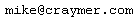

Kanata, Ontario, Canada
Email: 
| Personal | |
|---|---|
|
Mike's Curriculum Vitae Mike's CV or resume in Adobe PDF format (requires free Adobe Acrobat Reader). Short version.
The Craymer Family Genealogy |
Dr. William James Craymer
Bracebridge Examiner &
The Muskokan |
| Geodesy-Related | |
|---|---|
|
Mike's On-Line Geodesy Resources A collection of geodesy-related resources on the Web.
Canadian Geodetic Networks
GHOST User's Group
Mike's Software Archive
Geodetic Toolbox (for Matlab)
NETVAL (GPS Network Validation Software)
SPADE (Solar and Polaris Azimuth DEtermination) |
Mike's Publications A list of Mike's publications in geodesy. Most are available on-line in PDF format.
GPS Toolbox
Tables of Contents in Geodesy
SaLIS Recent Literature Reviews
Petr Vanicek, J. Tuzo Wilson Laureate |
Hosted on GitHub Pages